µMD1 Information Window
Installation and Operation Manual
For contact info, please see the Sci.Electronics.Repair FAQ Email Links Page.
Copyright © 1994-2022
Reproduction of this document in whole or in part is permitted if both of the
following conditions are satisfied:
1. This notice is included in its entirety at the beginning.
You can also order the DigiKey CART parts directly and build the thing on an
electronics breadboard. But as noted, the Digikey CART includes the
UNPROGRAMMED PIC32 WITHOUT EVEN THE BOOTLOADER. A PIC programmer
is required to install the bootloader, which can be done via the Programming
Header on the SG-µMD1 PCB. I use a Microchip PICkit 3, which can be
found on eBay for under $25. But several others would work. If I provide
the PIC32, it will have the bootloader and the latest µMD1 firmware.
However, switching over to
SG-µMD2
is the preferred option.
SG-µMD2 supports both heterodyne and homodyne interferometers
with higher performance for both. And SG-µMD2 is much
easier to assemble. Really. ;-) The only current downside is
that SG-µMD2 does not have firmware interpolation. The resolution for
heterodyne is only 80 nm with a Plane Mirror Interferometer
(versus ~158 with µMD1 with interpolation disabled) for rapid
changes in displacement. For slowly varying displacement, averaging
in the GUI can be used to increase the effective resolution.
Note: Links to Web pages external to this document will open in a single
separate tab or window depending on your browser's settings.
µMD1 is an inexpensive system for precision readout of displacement
(change in position), angle, straightness, and more
in metrology applications. It is designed and optimized for
two-frequency HeNe laser (heterodyne) interferometry, but also
provides limited support for single frequency (homodyne) interferometry,
as well as other measurement applications using optical or mechanical
encoders with Quad-A/B or up/down pulsed signals.
For a system optimized for these applications, with no practical
upper limit on slew rate and the same GUI as µMD1, see
Micro Measurement Display 2 (µMD2).
µMD2 also has basic support for heterodyne interferometers
with a higher REF/split frequency limit but currently no interpolation.
Unless your application involves high-REF lasers like the
Zygo 7701/2, µMD1 is still recommended for heterodyne.
While targeted for
experimenters, hobbyists, and researchers, there is no reason why
µMD1 can't also be of value in science and industry.
The hardware platform is a readily available inexpensive
microcontroller development board which communicates via
USB to a Windows PC, laptop, netbook, or tablet as shown below.
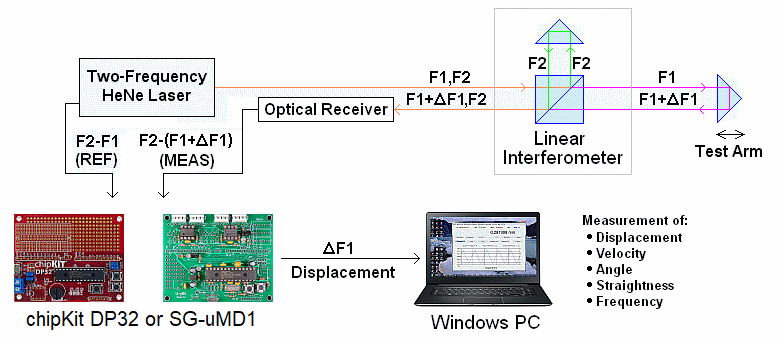
Typical Heterodyne Interferometer Setup using µMD1
Note that µMD1 refers specifically to the combination of the
PIC32-based hardware and firmware. It's possible there could be µMD2,
µMD3, .... µMDn - or µMD0 - in the future using
the same GUI. :) Oh, guess what? There is µMD2. ;-)
This document provides installation and operating instructions for the
µMD1 hardware, firmware, and software.
SG-µMD1 provides most of the features of the standard Digilant
chipKIT DP32 board that was previously used for µMD1, but
optimized for µMD1.
It uses the same PIC32 microprocessor and runs the same
firmware and GUI and is supported by the same software IDEs, and is the
same size. The PCB layout includes the line receivers and associated
components for up to 3 measurement channels, eliminating hand wiring.
Once assembled, the boards are totally interchangeable for µMD1.
Complete SG-µMD1 kits as well as just the PCB and PIC may be
purchased through eBay or direct from me via email.
It is assumed that the reader is
familiar with two-frequency interferometry in general as well as
HP/Agilent/Keysight lasers and interferometer optics. If not,
back up and start with Sam's Laser FAQ: Interferometers
Using Two-Frequency Lasers and Hewlett-Packard/Agilent/Keysight Stabilized
HeNe Lasers.
Mote: Throughout this document, "µMD1 board" or simply "board" refers
to the chipKIT DP32 or the SG-µMD1 replacement where there is no
need to distinguish between them.
Specifications are subject to change without notice. :-)
Finally, except as noted above, most features of the chipKIT DP32 have been
retained. So SG-µMD1 can be used as a chipKIT DP32 replacement for
other purposes if a "prototyping shield" was created that plugged into the
Ardiuno headers.
All Rights Reserved
2. There is no charge except to cover the costs of copying.
DISCLAIMER
µMD1 is intended for use in hobbyist, experimental, research, and other
applications where a bug in the hardware, firmware, or software, will not
have a significant impact on the future of the Universe or anything else.
While every effort has been made to avoid this possibility, µMD1 is an
on-going development effort. We will not be responsible for any consequences
of such bugs including but not limited to damage to the wafer FAB you
picked up on eBay for $1.98 + shipping, financial loss from the use of
37 spools of ABS due to the office 3-D printer fabricating a part 25.4x
too large in all dimensions, or bruising to your pet's ego from any number
of causes directly or indirectly related to µMD1. ;-)
Acknowledgment
Thanks to Jan Beck for selecting the chipKIT DP32 and writing and testing
initial versions of the firmware and GUI. And for getting me interested
in actually getting involved in this project. If anyone had told me
six months ago that I'd be writing code in C, MIPS assembly language,
and Visual Basic - and enjoying it (sort of) - I would have suggested
they were certifiably nuts. ;-) Jan maintains the master GUI source code
as well as slightly different versions of the firmware and a
development blog on the overall project.
And a version of the firmware providing basic readout of displacement
on any Bluetooth wireless device with a terminal APP, or with a bit
more polished presentation (though not the complete GUI) on Android devices,
may be found on Jan's Web site. See that and more under "References".
Introduction
IMPORTANT: To focus on SG-µMD2,
I am no longer providing complete kits of parts for µMD1.
The simplest option going forward if you really want
µMD1 is to order most of the parts directly from ey, and
the programmed PIC32 chip and SG-µMD1 PCB from me here or on eBay.
They are both the same price: $50.
Going direct to DigiKey for most of the parts enables you to customize the
parts order and will actually be less expensive overall than when buying
everything from me as in the past. And everything will come in nice
labeled baggies. ;-) To make this as painless as
possible, the SG-µMD1 V1.2 Digikey
CART 5-Jun-2022 has most of the parts for a 3-axis system.
The cost of the DigiKey parts is under $50 including shipping in the USA.
However, due to end-of-life on stocking of the through-hole RS422 receiver,
it (Digikey part #296-15057-5-ND) gets removed. If the programmed PIC
is ordered from me, two (2) UA9637s or UA9639s will be
included. The PIC32 can be deleted from the CART unless you want a spare (but
it will not even have the bootloader installed). Also, this CART includes both
through-hole and SMT USB connectors, so one of those can be deleted also.
And parts like LEDs can be ordered on eBay for about 1/25th of the cost
from Digikey! THIS CART HAS NOT BEEN FULLY ORDERED - ERRORS ARE POSSIBLE!
Specifications
Computer and Operating System Requirements
Everything that follows assumes the use of Windows. If you're
really smart and run Linux instead, sorry. ;-) (However, the GUI
may run on Linux under something called "wine" so there may be hope.)
MPIDE, UECIDE, and the
µMD1 GUI are known to work under Win XP, Vista, 7, and 10,
and should be fine on
Win 8 as well. Microsoft Net Framework 4.0 or higher is required
to run µMD1. Net 4.0 or a more recent version is probably on
your computer already but is available free from the Microsoft Web site.
Differences between the chipKIT DP32 and SG-µMD1
As noted above, both versions are identical with respect to µMD1
functionality including the firmware and GUI. The locations of most major
components are similar and the board size and mounting holes should
be identical or very close. The following are the notable differences:
Assembly using the chipKIT DP32 Board
If you dug up a dusty chipKit DP32 in the back of one of your electronics
junk drawers (or I unloaded the last one I have on you), go to the
Assembly Instructions
for the µMD1 using the Digilent chipKit DP32. Otherwise,
continue on to the next section.
The first SG-µMD1 PCBs to be available were Version 1.0. No more of those are being shipped. But if you purchased an SG-µMD1 kit awhile ago, it may have a V1.0 PCB. Version 1.2 will be in all future kits. They differ primarily in the LEDs and are equally good at doing their µMD1 thing. ;-) V1.2 has all the chipKit LEDs as well as one additional one so that REF and MEAS1-3 are illuminated. ;-) However, parts numbering has also changed slightly between V1.0 and V1.2 and thus it's essential to use the correct assembly manual. The version is labeled on the PCB silkscreen and bottom copper layers. Please refer to SG-µMD1-V1.2 Assembly Manual. There are links to the the SG-uMD1-V1.0 assembly manual and the MPLAB version (which is bare-bones for programming PIC32s directly or restoring the bootloader) under "References". More details are available in the V1.2 assembly manual.
The interferometer cable locations are unchanged so either layout can be referenced for wiring those.
The specific wiring for REF and MEAS will depend on the setup. If using HP/Agilent/Keysight lasers:
On the chipKit or SG-µMD1 PCB, the pin assignments on the connectors are:
Pin Function ------------------ 1 Signal 2 GND / RET 3 GND / RET 4 ~Signal
Where "Signal" is REF, MEAS1, MEAS2, or MEAS3. And if Signal and ~Signal are swapped, it makes no difference.
It's usually not necessary to run the REF and MEAS Return (RET) signals to the board even if there is no common ground connection between the board, and laser and interferometer optical receiver(s). As long as there are terminating resistors, they will provide the ground reference. In fact, under some conditions where everything is tied together with a common ground, the RET connections could add noise due to a ground loop. The line receivers only care about the difference between the REF and ~REF or MEAS and ~MEAS voltage levels as long as the absolute voltage levels are within their common mode and absolute voltage specifications. For cables of a few feet or less, it's almost certain that no connections are required for the Returns. But for long runs, shielded cable or twisted pairs may be desirable. This won't apply to most hobbyist/experimenter applications. :) There has to be a common Ground somewhere though, usually via the power supply.
Refer to the various connection diagrams in Hewlett Packard/Agilent/Keysight Stabilied HeNe Lasers.
Pin Arduino Labeling Signal Labeling Signal Name ------------------------------------------------------------ J3-1 9 RA0 RPA0 J3-2 10 RA1 RPA1 J3-3 11 RB0 RPB0 J3-4 12 PGC (RB1) RPGC (RPB1) J3-5 13 RB2 RPB2 J3-6 14 RB3 RPB3 J3-7 15 RA2 RPA2 J3-8 16 RA3 RPA3 J3-9 17 RB4 RPB4 J3-10 18 RA4 RPA4 J3-11 3.3V 3.3V 3.3V J3-12 VIN (5V) VIN (5V) VIN (5V) J3-13 GND GND GND J4-1 0* RB5 RPB5 J4-2 1* RB7 RPB7 J4-3 2* RB8 RPB8 J4-4 3* RB9 RPB9 J4-5 4 RB10 RPB10 J4-6 5 RB11 RPB11 J4-7 6 RB13 RPB13 J4-8 7 RB14 RPB14 J4-9 8 RB15 RPB15 J4-10 - - - J4-11 3.3V 3.3V 3.3V J4-12 VIN (5V) VIN (5V) VIN (5V) J4-13 GND GND GND
* 5 V tolerant.
The numbers refer to standard Arduino signal "pin" designations while the RPBs refer to DP32 PORT A or B bits. The photo of the chipKIT board, below, has the Arduino designations. This is revision C and is what Digkey has been shipping. It also has the power LED, so perhaps that's an addition. :) The relevant board wiring is the same for the two versions, it's just the silkscreens that differ. But there are apparently older versions that may not be the same.
Note 1: The jumpers on JP7 are NOT in the correct position for our needs in the photo below.
Note 2: VIN MUST be +5 VDC to use the chipKit DP32 with µMD1 parts.
The chipKit and SG-µMD1 pin locations are similar:
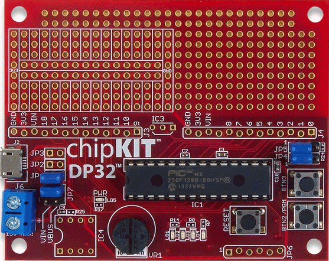
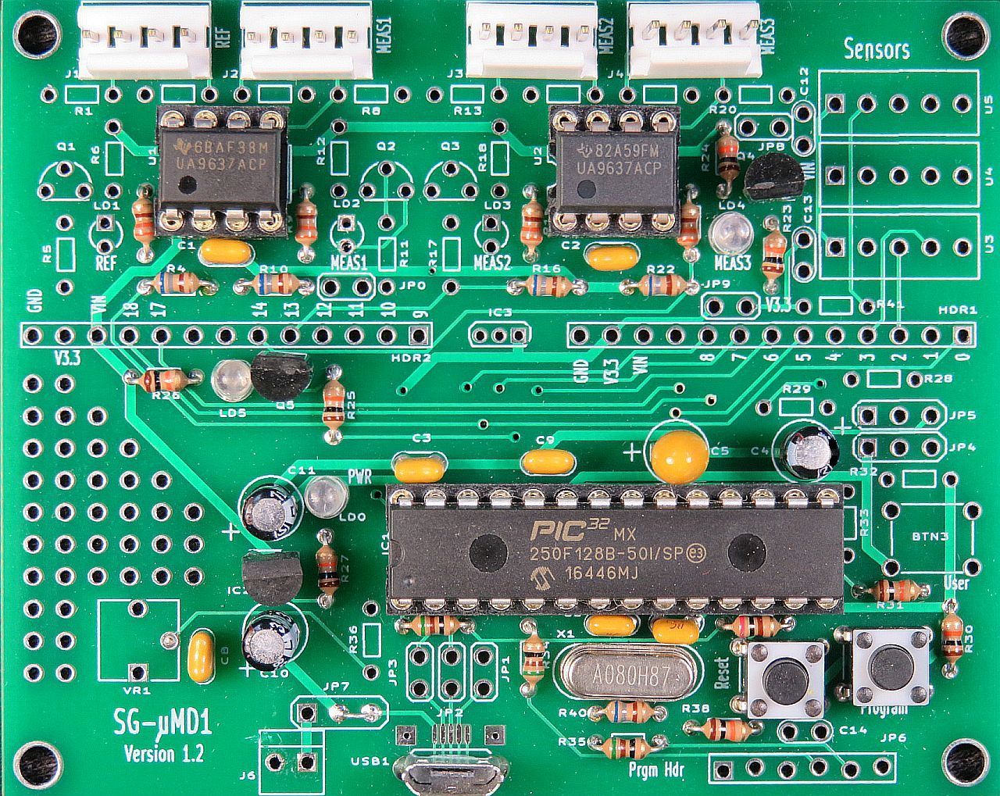
CAUTION: Most PIC pins are NOT 5V tolerant - they will be unhappy if a 5 V signal is connected to them directly. Thus VIN (5V) or any signal that may go higher than 3.3V should NEVER be connected to them, even for an instant. Bad things may happen. 3.3V is acceptable through a current limiting resistor (just to be doubly safe, for the micro that is). Hooking raw power to what may be a logic output (accidentally or otherwise) is never a good thing! P.S. "Unhappy" and "Bad things may happen" could mean that you'll ruin the PIC chip.
The (non-Alpha) versions of the firmware are absolutely guaranteed to be new and improved in terms of features, capabilities, and performance. This probably means there will be some new and improved bugs as well. The Alpha versions are even more likely to have some juicy bugs. Please contact us via the link at the top of this page should any dare to appear (or for any other legitimate reason). ;-)
Added "#define REF_Sync 1" statement to enable synchronization of MEAS capture to REF edges for interpolation. Comment this line out if it is desired to use µMD1 WITHOUT interpolation. Interpolation MUST also be disabled in the GUI. This will then randomize sampling and allow GUI averaging to increase effective resolution for slowly varying displacement. UNTESTED.
Modification: Changed LED3 to be 50 percent duty cycle heartbeat for compatibility with chipKit 32 and SG-µMD1.
Bug fixes: v57.01 (hopefully) eliminates the firmware crashing with multiple axis systems. It has no effect on a single axis system.
Sensors: The sensor code to read values ONLY when the board is reset or power cycled is present but disabled. Sensors may be enabled by uncommenting the second line of code.
Low REF Support: Extends usable range for interpolation down to a REF frequency of around 0.7 MHz if #define LowCPUClockEnable = 1. This is useful for DIY axial Zeeman lasers that run at lower REF.
Modification: Changed LED3 to be 50 percent duty cycle heartbeat for compatibility with chipKit 32 and SG-µMD1.
V60.00 should otherwise be basically similar but some of the switch points for clock speed optimization have changed so behavior may differ in subtle (or not so subtle) ways. For use with commercial lasers, V57.03 is fine and is currently installed on any boards I provide.
Note that none of these support homodyne mode. For more info and a version that might, see the section: Using µMD1 with Homodyne Interferometers.
Input Counter TxCKR Bus Address Pin Signal Notes
-------------------------------------------------------------------
REF Timer3 0b0001 0xbf800A10 0/RB5 RPB5
MEAS1 Timer5 0b0010 0xbf800E10 11/RB0 RPB0 LED4
MEAS2 Timer4 0b0100 0xbf800C10 13/RB2 RPB2 LED2
MEAS3 Timer2 0b0001 0xbf080810 14/RB3 RPB3 LED1
-- -- -- ---- 12/RB1 RPB1 LED3
LED3 is the heartbeat/status indicator depending on firmware version. Other signals that are currently used are RPB7 (AM2302), and RPB8 and RPB9 (I2C bus for BMP180 and SHT20).
Most of these details are really only relevant if there is a desire to modify the firmware, which is not advised since no support will be provided if even 1 character in a comment field is changed without prior approval from µMD1 Central. :) This approval process normally requires a minimum of 3 years, 7 months, 24 days, 11 hours, 35 minutes, and 22 seconds, but often takes a lot longer. :-) For wiring using the firmware provided, only the pin assignments matter.
Depending on how the line receivers decide to behave in combination with the laser or optical receiver when there is no signal, the LEDs may provide an indication of MEAS signal status, though they do not appear to respond to MHz frequencies. The reason the LEDs on the chipKIT board are on the clock inputs at all is that there are only a very limited of pin/Timer combinations that are available and using those with the LEDs results in the fewest conflicts. For SG-µMD1, there are seprate (optional) LEDs on the all of the line receiver outputs (which also are probably not useful and don't need to be installed).
Note that if updating firmware, the GUI may also need to be updated and vice-versa.
Here is the communications format between the firmware and GUI. This information is of little relevance if using the GUI, but will be useful if writing your own application software or for data analysis. Each of the values is sent as an ASCII string representing a signed (if needed) decimal number separated by spaces at the sampling rate. The firmware maintains a FIFO buffer so that if the USB data is delayed for some reason, no data should be lost (hopefully):
The same format is used for both homodyne and Heterodyne modes but not all fields will be filled in or relevant for homodyne.
Standard (Single Axis) Data (8 values):
0: REF Frequency Count* = REF frequency/Sample Frequency
1: MEAS Frequency Count 1* = MEAS 1 frequency/Sample Frequency
2: Displacement 1 (in 1/2, 1/4, or 1/8 wavelength)
3: Velocity Count 1 = (Displacement 1 - Previous Displacement 1)/Sample Frequency
4: Phase 1 = Signed fractional offset between Displacement increments. The
typical range is -128 to +127 (8 bit 2's complement).
If Phase is not valid, then an error code is sent instead:
0x200 = no counter 1st REF
0x400 = no counter 2nd REF
0x800 = no counter MEAS 1
0x1000 = no PORTB 1st REF
0x2000 = no PORTB 2nd REF
0x4000 = no PORTB MEAS 1
5: Sequence Number (Unique serial number for each sample)
6: LowSpeedCode (See below)
7: LowSpeedData (see below)
The following 8 values will also be sent when Multiple Axis Mode is active:
8: MEAS Frequency Count 2*
9: Displacement 2
10: Velocity Count 2
11: Phase 2
12: MEAS Frequency Count 3
13: Displacement 3
14: Velocity Count 3
15: Phase 3
LowSpeedCode (specifies contents of LowSpeedData):
0-99: GUI Data/Control:
0: No Data
1: Laser Power
2: Signal Strength
3: Temperature 1 (XXX.YY, °C, 0 to 70.00)
4: Temperature 2 (XXX.YY, °C, 0 to 70.00)
5: Pressure (XXX.YY mBar, 500.00 to 2000.00)
6: Humidity (XXX.Y percent, 0 to 100.0)
8: Sample Frequency (XXX.YY Hz)
10: Firmware Version (XXX.YY)
20: Homodyne Interferometer (if non-zero)
Low byte: # homodyne axes
Next byte: counts/cycle (4 for quadpulse)
(Not all of these are currently implemented.)
100-199: Diagnostics
200-255: Reserved
* The REF and MEAS Counts are the incremental change since the last sample, NOT the total value.
Installation of the device driver, which should be performed before the board is plugged in, can be done in several ways without using MPIDE. (1) is the simplest:
Once the driver has been successfully installed, plug the board into any available USB port. The red power LED (if present) should come on. (Not all versions of the chipKIT DP32 have one; apparently someone decided to save 1/10th of a cent on an earlier or later revision!) If I (Sam) sent you the chipKIT DP32 board, it will have been loaded with a version of the µMD1 firmware and at least one of the green LEDs will be lit. But by the time you've received it, the firmware will probably be out of date, so reloading will be required in any case. :) For SG-µMD1, the power LED at the very least should be on.
Windows should recognize the board and ask to install a driver. Point it to the location of Stk500v2.inf.
Once the driver is successfully installed, the board should come
up as a serial port. Go to the Windows Device Manager to locate and select it.
UECIDE will work with all versions of the firmware. But the only version of UECIDE I've had success compiling firmware without errors is Version 0.8.8alpha17 though I assume that more recent versions like 0.8.8alpha22 will also be satisfactory. All versions as far back as 0.8.8alpha22 and beyond are available at UECIDE on GITHUB. However not, apparently uecide-0.8.8alpha17. :( But never fear, I have archived it and will provide a link upon request, but it's not clear whether it will install correctly now (see below). So I can also provide a µMD1-ready preconfigured version via Dropbox. This is a 391 MB ZIP archive which includes installation instructions in a short README file (most which is also below). Contact me via email if interested.
Other more recent versions probably work, they just hate me. :( :) And I'm not going to check: "If it ain't broke, don't fix it". ;-) I do know that the latest as of Winter 2019, uecided-0.10.5, runs but will not compile µMD1 due to changes in the compliler and #include files.
41J Blog µMD1 Build Notes has instructions for using uecide-0.8.8alpha22 (linux, but that shouldn't matter). I could not get this to work in 2019 under Windows though. In fact, there may be problems getting any of the older versions to install now. Even my working uecide-0.8.8alpha17 does not display properly in "Plugins Manager" anymore. so it cannot be configured from scratch or have anything added. However, these older versions may work properly if only the executable is replaced.
The UECIDE files should be unzipped to any convenient location on your computer. That folder can be moved wherever desired without any side effects. The executable is UECIDE.exe - add a shortcut on the Desktop. UECIDE requires around 160 MB where the excutable is located, and another 600+ MB for support files typically at C:\users\YourUserID\AppData\Local\UECIDE. The location of the data can be changed in File->Preferences or by editing the text file "preferences.txt" in this directory. If doing this after having configured UECIDE, copy all the files to the desired destination FIRST, then change the data directory in File->Preferences and exit UECIDE exit first and edit "preferences.txt". DO NOT delete the original UECIDE directory or the preferences file! :) Otherwise, the configuration information will all be lost. But once the data directory has been moved, everything else in the original UECIDE directory can be deleted. The required directory trees and typical disk space requirements are:
(The following has been amended thanks to James Rodriguez de Castro.)
If you would like to minimize the space on the drive with "AppData\Local", the "location.data" entry in preferences.txt can be changed to point somewhere else. The data must then be moved there BEFORE STARTING UECIDE.
NEWER VERSIONS OF UECIDE???
The vast majority of users should be OK with the above. However, if you are feeling adventurous, we have found an experimetal procedure that allows the firmare files to compile using newer versions of UECIDE even though the old libraries upon which the firmware is based are not supposed to be supported in recent versions of UECIDE.
We stress that this is experimental and entirely unsupported. We have tested it on a grand total of 2 computers running Windows 10, where we installed UECIDE version 0.11.10, and we have no way of knowing if this will work in earlier or later versions of UECIDE or on different computers or Windows versions, or if it may suddenly stop working after a sharp sideways glance at previously working system. Use at your own risk.
If yo still want to go ahead and install a new vesrion of UECIDE on the same machine, follow the steps below:
Here is another way to install a newer version of UECIDE but I suspect this may be risky:
(From: Wim Huyghe.)
(Edited to reflect updated archive. --- Sam.)This is how I installed a recent version of UECIDE with the above files:
- Copy or move "Sketchbook-UECIDE" to your $USER\Documents folder and rename it to UECIDE. Several versions of µMD1 linked from the manual are there, as well as some sensor libraries.
- Copy or move "Data-UECIDE" to your "$USER\AppData\Local" folder and rename it to UECIDE. (This will require 600 MB or more.)
- Edit the "preferences.txt" file in "$USER\AppData\Local\UECIDE" so the links are correct.
- Install latest version from UECIDE from here: https://uecide.org/download.
When UECIDE was then run, it already had the board, compiler, and libraries set up and I could compile all versions of the µMD1
For my own reference: I could not get this to work in a way that permitted the same version of UECIDE to be used for both µMD1 and Arduino. So my fallback was to maintain two instances of the preferences file called preferences.uMD1 and preferences.Arduino, and copy the appropriate one to preferences.txt; then run UECIDE 0.8.8alpha17 for µMD1 and UECIDE 10.6 for everything else. Only the preferences files are in C:\users\sam\AppData\Local\UECIDE. This is a royal kludge but it guarantees that one can't mess up the other. And as they say: "If it works, use it.". ;-)
UECIDE does not actually install in Windows; there are no files stored in the Windows directory and no changes to the Registry. So uninstalling it is simply a matter of deleting the first three directories.
Compared to most applications, UECIDE takes forever to start up even on a fast PC. So be patient. That's the bad news. The good news is that compiling and uploading is about 5 to 10 times faster than with the Arduino IDE. Go figure. :) So putting up with UECIDE's quirks (see below) may be worth it.
The first thing UECIDE will likely do is to tell you that no boards are installed and then open the Plugin Manager. If it does not, do it manually by going to Tools->Plugin Manager. At first the pane along the left will only show the word "Plugins". But after a couple minutes, it should update with a list: Plugins, Libraries, Boards, Cores, Compilers, System. The following are required:
For each of these click on "Install". Installing the chipKIT board will probably automagically install the other chipKIT-related files and may take several minutes. Confirm that each entry has a green check mark next to it.
Close the Plugin Manager and go to "Hardware" and confirm that the proper Board (chipKIT DP32), core (chipKIT), and Compiler (pic32-tools) has been selected. Click on it if not.
Some other quirks of UECIDE that I've found:
Plug the board into any available USB port. The red power LED (if present) should come on. (Not all versions of the chipKIT DP32 have one; apparently someone decided to save 1/10th of a cent on an earlier or later revision!) If I (Sam) sent you the board, it will have been loaded with a version of the µMD1 firmware and at least one of the green LEDs will be lit. But by the time you've received it, the firmware will probably be out of date, so reloading will be required in any case. :)
Assuming the driver has already been installed, go to Hardware->Serial Terminal and select its COM port. Typically, this will be the highest number COM port, or perhaps the only one, since no one uses these for much of anything anymore.
UECIDE should remember the configuration settings automatically upon exiting.
The firmware (via the links, above) is provided as a source file which probably has an extension of ".pde" or ".ino" (though the specific name doesn't matter - it's just a text file). However, the name may NOT contain any dashes "-" due to the peculiar restrictions of Java or something. Make a directory with the name of the firmware (without the extension) and put the firmware file there. For example, if the file is named uMD1_FW_v123.ino, make a directory called uMD1_fw_v123. and put uMD1_FW_v123.ino in it. Note that case matters so the name of the directory and name of the firmware file (without the extension) must match case character-by-character exactly. Thus Interferometer.pde is not the same as interferometer.pde
Compiling...
* Compiling sketch...
* Compiling core...
> api
* Compiling libraries...
* Linking sketch...
Compiling done.
Memory usage
* Program size: 55532 bytes
* Memory size: 3452 bytes
* Compilation took 5.634 seconds
Uploading firmware...
* Resetting board...
* Uploading...
* Resetting board...
* Upload Complete
Windows should recognize that the COM port dropped out momentarily and reappeared. The firmware will be spitting out sequences of numbers at the sampling rate. These may be viewed by going to: Tools->Serial Terminal. With no interferometer hardware, they will be rather boring with only the sixth value incrementing sequentially (Sequence Number) and the 7th and 8th values cycling among some obscure numbers (Low Speed Code and Low Speed Data). To Windows, the board appears as a COM port. Thus any application that processes COM port data can be used in place of the µMD1 GUI, should this be desired.
If the firmware crashed somehow, Windows may display a message saying something about the USB port not working. But that shouldn't happen with any firmware downloaded from here. :) And on rare occasions a cosmic ray or hardware glitch may result in the upload failing with a checksum or other error. Just put the board in program mode and try again. If the selected COM port is incorrect, cancel and retry.
Once loaded, the firmware is retained in non-volatile memory so this only needs to be done at most once - or until a firmware update is available!
The firmware may also be compiled without uploading by using Ctrl-R. Since you haven't messed with the code, it should compile without errors. This is slightly faster for testing and doesn't use the board at all so it can be off doing whatever it pleases. :)
Important: Terminate any instances of the µMD1 GUI before uploading the firmware and put the board into program mode (again if necessary) AFTER doing this even if LED1 is flashing.
0 0 0 0 31232 16927 0 0 0 0 0 0 31232 16928 0 0 0 0 0 0 31232 16929 10 5610 0 0 0 0 31232 16930 8 45776 0 0 0 0 31232 16931 3 -1 0 0 0 0 31232 16932 4 -1
If there is a display like this with the 6th number incrementing by 1, then
the board is probably working.
The GUI has been stable for several years, with only a few updates mostly relating to environmental compensation. It is compatible with all versions of the firmware.
Changed copyright from 1994-2020 to 1994-2024. ;-)
Bug fixes: Extended range of wavelengths from 0.001 nm to 10 mm; fixed diagnostic readouts for homodyne mode, more or less.
Bug fixes: Forces number conversion to use USA format to prevent the GUI from crashing if the PC was set up in a different country. Eliminates the gross scale error in Frequency plots (but still may be off by 20 percent depending on sample rate, and more if using the ultra-low sample rate for hobbyist laser support).
Additions: Adds homodyne support for selectable number of counts/cycle defined in the firmware. Updates copyright date. ;-)
Bug fixes: Environmental Compensation defaults to ON using the standard values of 20 °C, 760 mm/Hg, and 50% RH. (For most applications, it would not make sense to use the vacuum wavelength!) Turning Environmental Compensation on or off also resets the display so only future changes are affected.
Bug fixes: Corrects (hopefully) inaccurate calculation in Environmental Compensation by using NIST: Simple Shop-floor Formula for Refractive Index of Air. The Environmental Correction should be accurate but text boxes on right may not agree with it.
Save the µMD1 GUI .exe file into any convenient directory. (There's a small chance that the first time it's run, an error is produced since there is no configuration file associated with it. Simply continue and the GUI will come up. When it is closed using "Finish", valid settings will be saved so that the error should ot appear again.)
Even if there is no interferometer hardware attached to the board, it is possible to confirm that the PIC is talking to the GUI. Go to "USB Port" and select the same COM as used to upload the firmware. The graph should immediately start scrolling to the left indicating that it is accepting valid data, even if it is all 0s. The display will show "No Signal" (assuming error detection is enanbled) since there are no REF or MEAS clocks. But the fact that it's scrolling means the communications link is working.
When started, the µMD1 GUI (henceforth simply called the "GUI") comes up in Displacement mode with graphing enabled. The only action required by the user is to select the USB COM port. Once selected, the readout and graph will begin displaying the interferometer data.
Important:
Data from the board is normally sent at a rate of 457.76, 610.35, or 732.42 Hz depending on the measured REF frequency of the laser. (If you're curious, the precise sampling rate is the PIC CPU clock frequency divided by 65,536 - the number of counts between the 16 bit Timer1's overflows, used as the sample rate interrupt clock.) The CPU clock frequency is automatically changed based on the laser's REF frequency to optimize sub-count interpolation.) The data includes counts for REF, MEAS, displacement, velocity; a unique sequence number to identify samples; as well as other low speed data such as environmental sensors and diagnostics. (More info can be found a few paragraphs above.) The GUI displays are updated at approximately 60 Hz.
All the screenshots below except for interpolation use simulated data, which was more convenient for developing this manual! However, it also means you can play around and recreate these displays before building your interferometer. The screen shots showing the effects of interpolation are of actual data.
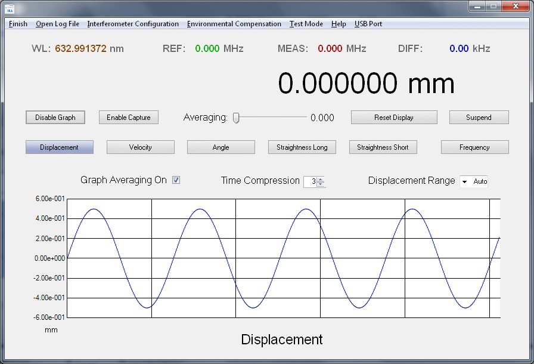
The first set are the selection buttons at the top of the window. Note that except for USB Port, these require only a single click to activate:
The log file is closed and its name and path are saved upon exiting the GUI.
Due to timing issues with the digital sensors, values for temperature, pressure, and humidity are currently only acquired when the board is reset. Thus should there be a sudden ice age after this, the GUI will not know about. :( :) The solution to this (including the ice age) is not currently known.
The values are signed long integers of the designated displacement(s) in nanometers including averaging and axis flip. (Same as the readouts.) The "*" can be used by the parser at the receiving end to detect the end of line.
To indicate that the Monitor COM port is active, a "+" will appear to the left of the "Graph Averaging On" label, flashing at the rate of the data lines being sent. Its color is subject to change without notice. :) Note that the graph does NOT need to be visible for the data to be transmitted.
Note: Once a USB port has been opened, the selection cannot be changed or closed. Code to close an open USB port is purported to do bad things and has been disabled. If an incorrect USB port was selected by accident, exit the GUI and restart. Any open USB port will be closed upon exiting.
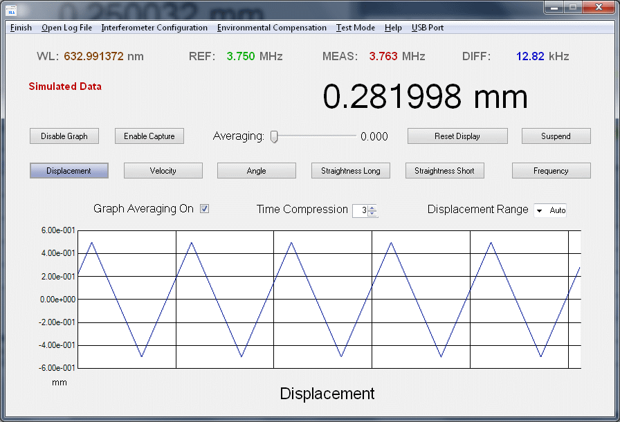
These may all be accessed via Alt-first letter.
The next set are the buttons, checkboxes, and other widgets on the main window:
When the "Encoder" checkbox in Interferometer Configuration is checked µMD1 will use the constant small angle increment WTIHOUT the Trig calculation and the text will change to "Encoder Angle". This is useful with rotary encoders and ring laser gyros.
The gaps in the REF frequencies are for hysteresis to prevent rapid switching back and forth if at the border. And if you must know, the reason for different sample frequencies is to optimize sub-count interpolation. (If Firmware V60.00 is installed with LowCPUClockEnable set to 1, there is an additional sample frequency of 305.17 Hz below a REF of 1.075 MHz.) The ranges are subject to change without notice, but probably not by much and no one should really care. :)
There are three options to select what data is saved:
The format is: "D: Displacement N: Sequence Number" where Displacement and Sequence Number are values in decimal. The Displacement an integer multiple of wavelength times the multiplier depending on the type of interferometer. It does NOT include the phase or sub-wavelength interpolation value. Example:
D: 51643 N: 15345
Assuming the use of a Plane Mirror Interferometer (10706A, basic increment of 1/4 wavelength), the Displacement would be 51643 * 158.25 nm or approximately 8.172 mm.
The format in Single Axis Mode (8 values) is: "REFFrequencyCount MEASFrequencyCount Displacement VelocityCount Phase SequenceNumber LowSpeedCode LowSpeedData". Example:
1534 1532 51643 2 144 15345 0 0
The format in Mulitiple Axis Mode (16 Values) is: "REFFrequencyCount MEAS1FrequencyCount Displacement1 Velocity1Count Phase1 SequenceNumber LowSpeedCode LowSpeedData MEAS2FrequencyCount Displacement2 Velocity2Count Phase2 MEAS3FrequencyCount Displacement3 Velocity3Count Phase3".
The format regardless of mode is: "R: REFFreqeuncyCount M: MEASFrequencyCount D: Displacement V: VelocityCount P: Phase N: SequenceNumber T" where the "T" signifies that this is Test Mode data. Example:
R: 1534 M: 1532 D: 51643 V: 2 P: 144 N: 15345 T
Caution: The log file can grow rapidly - especially where all the data is stored - so it's probably not the sort of thing to do for hours on end unless you have stock in a disk drive manufacturer! :)
All these formats have a fixed number of fields that are space-delimited. Thus importing the log file into programs like Excel or Matlab should be straightforward.
When interpolation is enabled (the default), as averaging coefficient of around 900 is recommended to minimize sample-sample noise in the graph.
The Averaging coeeficient is saved upon exiting the GUI.
Suspend is useful when making adjustments to the inteferometer beam path and/or laser.
The Time Compression factor is saved upon exiting the GUI.
The format is slightly modified when Frequency mode is selected. This graphic shows the actual DFT of the triangle waveform in the one above. Note that the DFT coefficients go as 1/N rather than 1/N-squared because it's actually using the velocity data, which is a squarewave.
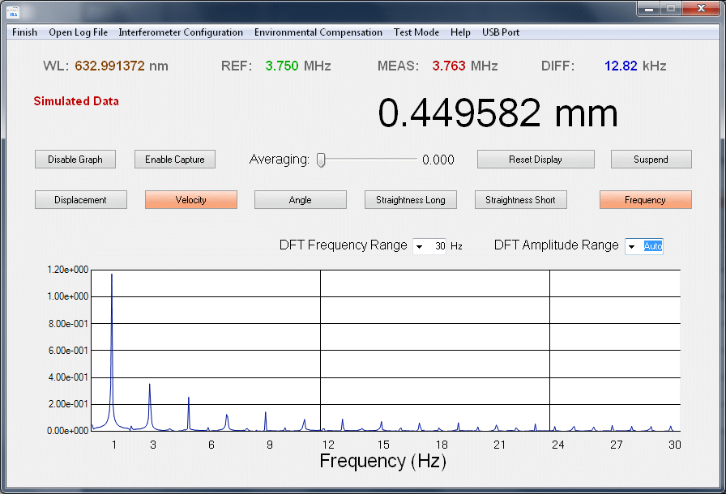
The horizontal scale is approximately accurate for real data. The vertical scale is somewhat arbitrary. The Main Readout shows Displacement data when in frequency mode.
There is still an error of up to 25 percent is the actual values since they depend on the sample rate being used, which varies depending on the REF frequency of the laser. The uMD technical department has not gotten around to provided corrected labels, can you believe that? :) And the error could be more than 2X too high if using the special low sample rate hobby setting in the firmware. We know about this and it may get fixed someday later.
Selecting Frequency sets Time Compression to 1 since the graph data is used for the DFT calculation. There will also be a delay in the Frequency plot accuracy depending on the DFT Frequency Range and input signal as data is accumalated.
The DFT Frequency Range is saved upon exiting the GUI.
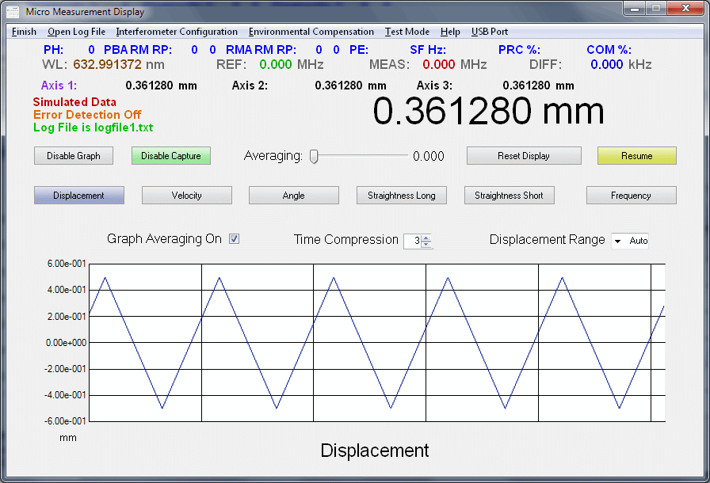
The units for the Main Readout, as well as for the graph vertical axis (all except Frequency mode) are selected in the Interferometer Configuration window. The options are nm, µm, mm, m, in, and ft for all but angle, which has arcsec, arcmin, and degree. For velocity, "/s" is added. The same units also apply to the graph "Range" selection and vertical axis of the graph.
Loss of the REF signal will result in a "REF (Head) Error" if error detection is enabled. This error may also be forced by clicking on the REF frequency value.
Loss of the MEAS signal will result in a "MEAS (Path) Error" if error detection is enabled. This error may also be forced by clicking on the MEAS frequency value.
If the DIFF frequency exceeds valid limits, a "Slew (Rate-) Error" or "Slew (Rate+) Error" will be generated if error detection is enabled. These errors may also be forced by clicking on the DIFF frequency value. Which one will depend on the direction of change of the displacement at the instant of the click.
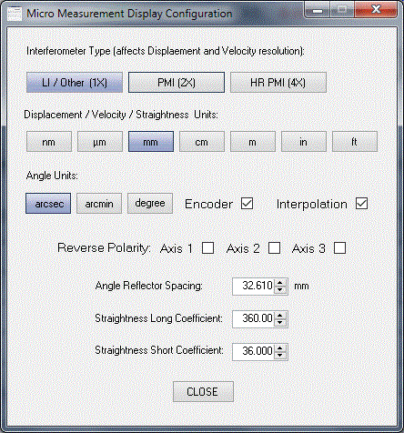
Linear coefficienets:
These settings only affect linear measurements.
Units (as appropriate)
Known quirk: If neither the COM Port or Test Mode is active, switching among the Units buttons will only change the Units lable and/move the decimal point/precision without affecting the readings. Just thought you should know. ;-)
Parameters (as appropriate):
Miscellaneous:
The following graphs are of data from an actual interferometer with a mirror mounted on a custom built high stability PZT so that small movement could be programmed from an electronic function generator (e.g., Wavetek). Before installing this assembly directly on the Plane Mirror Interferometer, small programmed movement was totally swamped by vibrations from the fan of the laptop on which the GUI was running. And gentle tapping on a table two floors up was easily detectable in the µMD1 readout and graph (via Remote Desktop). Note the vertical scale of the graphs. This is unretouched real data. The PZT is driven by triangle waveforms with p-p amplitudes of 60 and 10 nm for the left and right graphs, respectively. Note that GUI averaging is also turned on with settings of 900 to 950 (10 to 20 samples) so part of the improvement occurs because of that. But without interpolation, no movement at all might show up regardless of GUI averaging setting, since 60 nm and 10 nm are much less than the basic resolution of 1/4 wavelength using a Plane Mirror Interferometer.
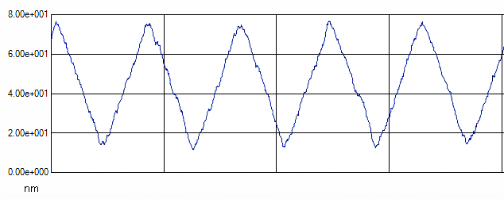
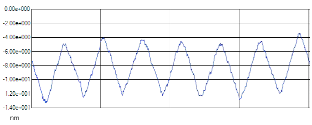
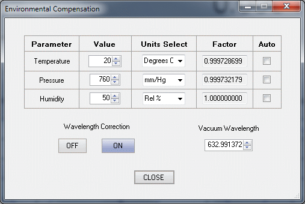
Note: Temperature, pressure, and humidity values from installed sensors are currently only acquired when the board is reset, but are sent periodically to the GUI.
If the Temperature Auto checkbox is checked, the value sent by the firmware overwrites the value in the Temperature Value box using units selected by the Temperature Units Select box. The correction is then recalculated.
Test Mode sends 34 °C.
If the Pressure Auto checkbox is checked, the value sent by the firmware overwrites the value in the Pressure Value box using units selected by the Pressure Units Select box. The correction is then recalculated.
Test Mode sends 567 mm/Hg.
If the Humidity Auto checkbox is checked, the value sent by the firmware overwrites the value in the Humidity Value box. The correction is then recalculated.
Test Mode sends 89%.
Note 1: With the current GUI, the Factors for Temperature, Pressure, and Humidity will change either based on the entered values or via the hardware sensors (if implemented). HOWEVER, their exact value is not guaranteed to be meningful and should only be considered for trends. This was supposed to be fixed when the environmental calculations were corrected using the NIST formulas, but the staff assigned to do the work took a couple years off, sorry.
Note 2: With Environmental Compensation turned OFF, the vacuum wavelength is used in calculations. Therefore, Environmental Compensation should be turned ON even if using standard values.
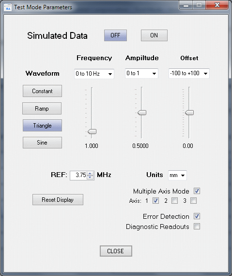
The Waveform is saved upon exiting the GUI.
The REF value is saved upon exiting the GUI.
Note that while Test Mode will operate in Angle mode, the values it sends are linear displacements. Thus, what this really means may be too difficult for the average human brain to evaluate and may result in an overload and unintentional brain reboot. :)
The Units selection is saved upon exiting the GUI.
The Error Detection state is saved upon exiting the GUI.
The Diagnostic Readout state is saved upon exiting the GUI.
If the GUI detects data (MEAS clocks) on axes 2 or 3, the firmware and GUI enter Multiple Axis Mode utilizing an expanded communications format, and the appropriate readouts will appear as shown below.
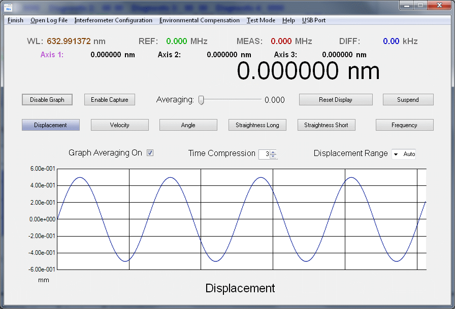
All GUI functions apply to the primary axis, which defaults on startup to Axis 1. The primary axis is what the Main Readout, REF/MEAS/DIFF frequency displays, frequency analysis, averaging, and graph apply to. Clicking on the Axis 1, Axis 2, or Axis 3 labels will select it to be the primary axis and change the color of the selected axis label to identify it as the primary axis. The units of the primary axis are also used for the others. Error detection (if enabled) only applies to the primary axis. Averaging is NOT applied to the Axis 1, Axis 2, or Axis 3 readouts, even the one that is the same as the primary axis.
Note that in Multiple Axis Mode, the communications format sends somewhat more data over the USB COM port and the GUI must perform more computation. Thus this may cause problems for a wimpy pre-Jurassic PC operating on the hairy edge of what's possible. Once Multiple Axis Mode is entered using the interferometer hardware, the only way to return to Single Axis Mode is to restart both the firmware and GUI. This is because neither has any way to know whether dropouts of measurement clock signals are due to a beam path being momentarily interruprted or an axis actually being shut off (whatever that might mean).
Test Mode is also capable of exercising all three axes singly or in combination but the function generator data will be the same for all. This is controlled by the Multiple Axis Mode checkbox. When enabled, Axis 1, Axis 2, and Axis 3 checkboxes will appear below it with Axis 1 being the default on startup. Turning Multiple Axis Mode off will put the GUI back in Single Axis Mode. But this will be overidden when Test Mode is turned off if the USB port is enabled and the firmware is running with multiple axes.
Multiple Axis GUI support is currently under development. Specifications and behavior are subject to numerous changes without notice. ;-) However, no major features beyond what are described above are anticipated to be implemented in the GUI.
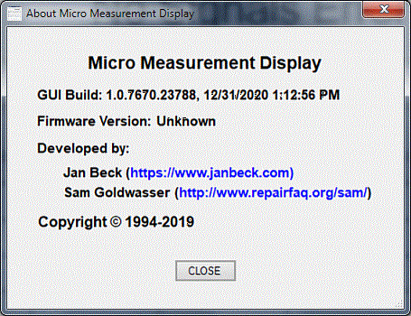
While originally designed and optimized for heterodyne interferometers using two frequency HP/Agilent/Keysight and similar lasers, the µMD1 GUI can also be used with homodyne (single frequency) interferometers. The interferometer optics used with these systems are identical to those for two-frequency lasers, but the detector electronics typically provide baseband SIN/COS "quadrature" outputs rather than REF and MEAS frequencies. For use with µMD1, the analog signals must be converted to digital pulses to increment or decrement the displacement counters. In fact, other measurement instruments providing quadrature signals like those using high resolution optical encoders can also be used with µMD1. Firmware may use either the chipKit DP32/SG-µMD1 board or an even less expensive platform like the Atmega 328 Nano 3.0. (Under $3 on eBay.) However, without some minimal additional quadrature decoding hardware, performance will be severely limited with either. And the standard µMD1 firmware does NOT support homodyne operation well or at all. A special version using the chipKit DP32 or SG-µMD1 is available but it has no warranty whatsoever. :) See below.
However, there is an alternative from Jan Beck compatible with the µMD GUI. It uses a Teensy 4.0 microcomputer board in place of the chipKit DP32/SG-µMD1 PCB. The only required additional hardware is a UA9637 or UA9639 dual line receiver for each of up to three channels. And they can run at very high speed. So if you're willing to swap out the hardware, this is a straightforward solution. See: HP5508A interferometer replacement hardware 2.0! - Homodyne.... Also see Encoder Tester - Sin/Cos and Incremental Quadrature for some background info.
It is possible to use the PIC32 on the chipKit DP32/SG-µMD1 PCB but to achieve any sort of performance requires some additional hardware.
As long as the communications format is adhered to, the µMD GUI will interpret displacement correctly. So, rudimentary firmware would accept SIN/COS quadrature signals thresholded to TTL levels to increment or decrement displacement, resulting in up to 4 counts per cycle or a resolution of around 79 nm with a Linear Interferometer (LI). (but with the Interferometer Configuration set to 4X.) There is no sub-wavelength interpolation option. However, a quad-pulse converter (4 counts/cycle) multiplies the resolution by a factor of 4 compared to the same optics with a two-frequency laser. So using a Plane Mirror Interferometer (PMI) would result in a native resolution (no interpolation) of just under 40 nm. These values come about from (1) 2X from the optical path up and back, (2) 2X from the PMI, and (3) 4X from the 4 counts per cycle of the quadrature decoder. With a High Resolution PMI, the resolution becomes ~20 nm. And some commercial metrology laser systems provide increased resolution via interpolation internally. But even the basic resolution of ~40 nm is not too shaby. ;-)
However, since the counting must be done in real-time, the uninterruptable portions of the USB serial data handler are a serious limitation for implementations not using a hardware pulse converter and counter. By minimizing the size of the unused values to reduce the time spent in the serial communications, this can be somewhat improved but it's still not pretty. Using the Atmega 328 Nano 3.0 with a PMI, the speed is currently limited to less than 1 mm per second, and some GUI functions like Velocity and Frequency won't do anything useful. Inquire for a copy of this Atmega firmware if interested in hacking it. ;-)
With minimal external logic to convert the SIN/COS quadrature to digital quadrature and then to TTL pulses, this speed limitation would virtually disappear using the PIC32MX250F128B on the chipKit or SG-µMD1 board with its internal counters. A PLD, discrete logic, commercial chip like the LS7083 "Encoder to Counter Interface", or even another microprocessor like the Atmega, would generate UP and DOWN pulses based on the SIN/COS signals. More modern versions of SIN/COS interpolator chips are available with multiplications factors of up to thousands (though at limited speed), though output edge rates of many Mhz are possible depending on the interpolation factor. The LS7083 and clones are available at not terribly inflated prices, though you may have to buy 100 of them. :( :)
UP would increment the REF counter and DOWN would increment the MEAS counter. Their difference would then be the Displacement just as in the standard µMD1 firmware. Data would be sent at a fixed sample rate of 732.42 Hz and all GUI functions would be supported. A second measurement channel would use the other two counters. The internal counters can run at over 20 MHz, so perfomance would be limited mostly by the speed of the optical receiver and quad-to-pulse converter.
A hardware implementation for the converter would provide the highest performance. However, depending on the actual requirements, there may be no need to dust off those old TTL chips or PLD programmer. When using a $2 Atmega 328 Nano 3.0, the maximum speed was measured to be order of 40 kHz for each of 2 channels using quick-and-dirty polling using the pathetically slow Arduino digitalread and digitalwrite instructions. With a few minutes of optimization invoking direct PORT calls instead, the aggragate throughput went up to order of a million (X4) counts/second. That's about 4 cm/sec with a PMI. Substituting a second PIC32MX250F128B board (chipKIT or SG-µMD1) to be used only for the converter should result in a several fold improvement over that.
There is a version of the µMD1 firmware that supports homodyne mode with 1 or 2 channels each using pairs of internal counters (>20M counts/second max but requiring an external pulse converter to generate the up/down pulses), along with a third channel via direct polling of Quad-A-B digital inputs. The maximum speed of the third channel is under 350 counts/second but this could still be useful for some applications like the Z axis in a high resolution 3-D printer. ;) To accomodate non-interferometer measurements using optical or mechanical encoders, the entry for "Vacuum Wavelength" in the "Environmental Compensation" window (632.991372 nm for HP/Agilent lasers) has a range of 1 nm to 1,000,000 nm (1 mm) so it can be set to the appropriate resolution required for anything from an atomic force microscope to a construction crane. ;-) If a value outside this range is required, contact me. ;-)
To display rotation angles from optical encoders (or ring laser gyros) properly, there is now an option in the GUI to bypass the non-linear calculation required by the Angular Interferometer. With the "Encoder" checkbox in the Interferometer Configuration screen checked, the the angle will read correctly based on the Angular Reflector Spacing being the radius of the encoder and the wavelength being (X4) count spacing around the periphery.
The graphic below shows µMD1 being used to test a home-built ring laser gyro. It is being rotated by hand on a Lazy Susan turntable.

Interpolation for higher resolution is possible using the raw SIN/COS analog signals and often done in commercial systems. However, I have absolutely positively no intention of even thinking about any implementation using the existing µMD1 hardware. And as noted, the basic resolution using a single frequency HeNe laser and PMI with quad-A-B digitally thresholded signals is under 40 nm. With a HiRes PMI, it would be under 20 nm. If you need something better then that, you probably have a budget to go with it. ;-)
Summary of homodyne inputs for µMD1 (chipKit DP32 or SG-µMD1
Pin Signal Counter Function Maximum Speed
-----------------------------------------------------------------
0/RB5 RPB5 Timer3 Axis 1 Up >20M counts/second
11/RB0 RPB0 Timer5 Axis 1 Down " "
13/RB2 RPB2 Timer4 Axis 2 Up " "
14/RB3 RPB3 Timer2 Axis 2 Down " "
10/RA1 RPA1 -- Axis 3 A 350 transitions/second
18/RA4 RPA4 -- Axis 3 B " "
To achieve higher performance from a less expensive platform like the Atmega, an external up/down counter could also be added, which would be read by the firmware via the digital inputs.
Support for homodyne interferometers is currently a "works-in-progress" so nothing is currently polished in the same way as µMD1 for heterodyne interferometers. :)
Quad-A/B to up/down converters
For most of these schemes, the quadrature-A/B (digital) inputs must be converted to up/down pulses to increment or decrement the counters that represent displacement. Here are several possibilities:
The first one is a discrete TTL implementations. Aynchronous Quadrature to Pulse Converter should run at 5 MHz or more. But there are a pair of discrete delays and the relative propogation delays of the 74LS04s and 74F153 are critical which may be just as bad as using monostables (which would earn you an "F" in my logic design course).
With some tweaks, the maximum speed can be greatly increased and this would fit into a small PLD or FPGA.
The next one uses an inexpensive Atmega 328 Nano 3.0:
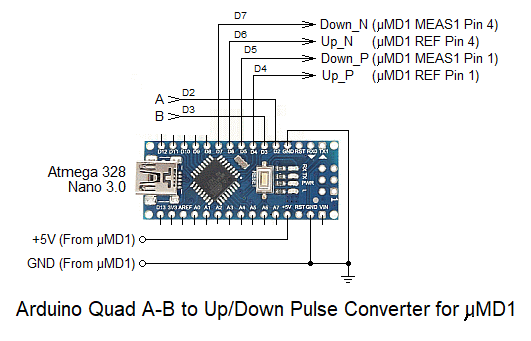
These provide up to a three channel Quad-A/B to pulse converter using the Atmega 328 Nano 3.0. (One channel shown and in the firmware.) Two channels could be used with the µMD1 chipkit DP32 counters and firmware below. These should work on other similar Arduino-compatible platforms like the UNO. They also provide a cool demo of quad-to-pulse conversion if LEDs (with resistors) are put on the input and output pins (below). :) Aggragate throughput 0.5 to 1 mpps (all channels) using polling (no interrupts) with direct PORT access (bypassing the sluggish Arduino libraries). Using something like a Teensy in place of the Atmega would result in orders of magnitude higher speed. That is left as an exercise for the student. ;-)
Quad A/B signal test and demos
Having said all that, here is the good stuff. :) It has been tested with a Renishaw RLE10 Fibre Optic Encoder with an RLD PMI head. In "Coarse" mode, it has the basic homodyne resolution of ~40 nm (1/16th wavelength). RLE10 "Fine" mode provides an additional 4X interpolation internally so the native resolution (with no interpolation in µMD1) is ~10 nm (1/64th wavelength). Pathetic. ;-)
Homodyne firmware and GUI
The following Beta version chipKit DP32/SG-µMD1 firmware and GUI supports homodyne operation with two high speed axes (pulse up/down) and one low speed axis (quad A-B) using the above pin assignments.
Although V59.01 also includes the heterodyne code, IT IS NOT GUARANTEED to work correctly and any bug fixes since the homodyne branch may not have been included, so unless you are a total masochist and want to reconcile differences between v59.01 and the latest heterodyne firmware, it should only be used for experimenting with homodyne interferometers. But if running it results in the Universe imploding, I do not want to know about it. ;-)
For this version of the firmware, LED3 indicates the percentage of time spent in the processing and communications routines in a ~3.2 second cycle as follows:
The brightness of LED3 on chipKit (LD6 on SG-µMD1) is proportional to the time spent in PRC or COM. If it is full on or full off continuously, something bad probably happened.
When the COM port is selected with homodyne firmware, the GUI will display "Homodyne Mode" followed by "X" and the Multiplier (counts/cycled specified in the firmware "#define HomodyneMultiplier" statement) on the main screen. The frequency counters are blanked and most errors are disabled.
This has been tested with a Renishaw RLE10 Fibre Optic Encoder and RLD PMI head using the Atmega-based quad to pulse converter. In RLE10 "Coarse" mode, it has the basic homodyne resolution of ~40 nm (1/16th wavelength). Using its "Fine" mode provides an additional 4X interpolation internally so the native resolution (with no interpolation in µMD1) is ~10 nm (1/64th wavelength). Pathetic. ;-) The graphic below shows an approximately ±400 nm change in displacement at 10 nm resolution from just gently pushing down on the optical breadboard with the PMI head and planar mirror mounted on a micrometer stage. But the micrometer is way too crude for nm-scale movement.
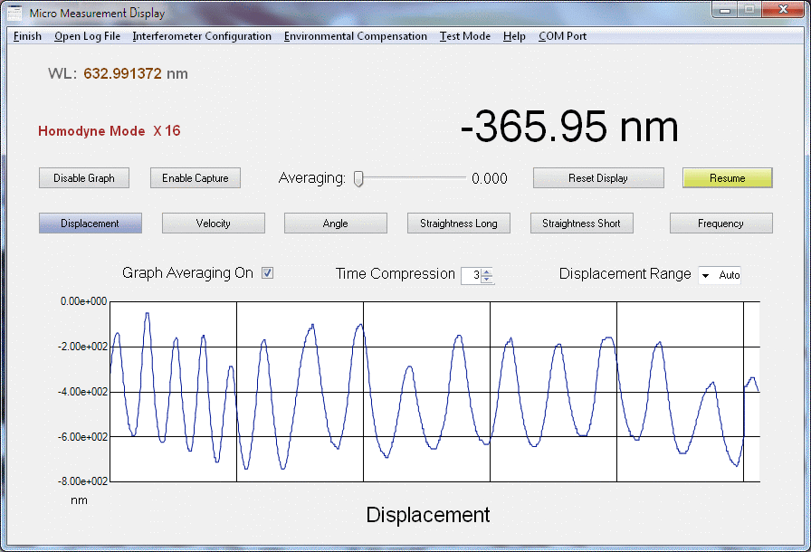
There may be a high performance version of the homodyne hardware and firmware in the future. Stay tuned but don't hold your breath. :)
Where performance is a total non-concern, here is a low speed Quad-A/B USB interface for the µMD GUI using the Atmega 328P Nano 3.0 ONLY (no chipKit or SG-µMD1 at all). Three channels should be possible with performance of up to around 350 pps on each one:
Te hardware required to interface to an interferometer with a Quad-Sin-Cos output is simply a pair of voltage comparators like the LM393 which along with the required red and green LEDs for the A and B signals ;) and Nano easily fits on a small solderless breadboard. In fact, the original prototype simply used 2N3904 transistors with trim-pots to adjust the amplitude of the Sin/Cos outputs of a Quad decoder. But this was too fiddly, so using a LM393 dual voltage comparator is much better at little additional complexity or cost.
However, it would be possible to demonstrate the principles of LIGO as well as to add some of the enhancements to boost sensitivity like extending the reference arm and adding multi-pass cavities on both arms. A Single Beam Interferometer (PBS cube and 2 QWPs) might be used along with a pair of high quality mirrors in each arm to multiply the effective path length and sensitivity.
At the very least, such a setup would be a very sensitive earthquake detector, though detecting black hole or neutron star collisions is out, unless they occur in our Solar system (which would probably be bad). ;-)
If you already have the chipKIT board or ordered µMD1, this isn't a real concern unless you are planning to duplicate your setup at a later date or would like a spare just in case something bad happens. In that case, getting another chipKIT DP32 board would make sense. I have purchased enough of these to handle anticipated demand for the next year or so, but a longer term solution is now called for. But the number is going down fast.
There are several options for the µMD project going forward:
For this to be viable, the PIC must have a minimum of 4 high speed counters (microchip calls them "Timers") whose clock inputs can be configured to connect to external pins. Surprisinigly, most PIC32 parts even in packages with many more pins do not have this capability.
Needless to say, this would be a very complex undertaking and the justification may simply not be there. Only a small number of hobbyist/experimenter types even care about the sub-wavelength interpolation, let alone Zygo support. And I have no intention of developing µMD1 for serious commercial release.
I have already begun (1) and prototypes are now available. Parts have also been ordered. This PCB includes the layout for the line receivers and environmental sensors as well as most other chipKIT features except for the EEPROM (though there is space for it). It's all through-hole except for the USB Micro B connector, which can be either through-hole or SMT. This project will proceed, but with enough chipKIT DP32 boards in stock for awhile, there should be a smooth transition.
The only downside to this approach for the user is that I do NOT intend to populate the PCBs, even for basic PIC32 functions (or at least you would have to pay 2 arms and 3 legs for it). ;-) So a bit more soldering is involved. See the specific info in the section: Assembly using the SG-µMD1 Board.
If someone were interested in working with Jan and myself on (2) or (3) (or some other option not listed), please contact me via the link at the top of this page. However, I have no current plans to do (2) or (3) on my own.
In rare cases, such behavior can be due to a noisy REF or MEAS signal as a result of crosstalk or improper termination. The REF or MEAS frequency readouts will differ significantly even with no movement and will not be accurate for the noisy signals(s). If a 50 MHz or higher bandwidth oscilloscope is available, check the quality of the REF and MEAS signals. REF and MEAS(s) should not be run together for long distances without separate shielding. And while the default value of 150 ohms for the terminating resistors is generally satisfactory, depending on your wiring run length and other factors, using a different (probably lower value) may be necessary. Substituting a UA9639 for the UA9637 (if used) may also help. It is a slower part and will tend to filter out any glitches. This wouldn't be a preferred solution though and might earn you an "F" in my CSE371 Intro to Computer Design course. :( :) Due to the way the PIC synchronizes the Timer inputs (which includes REF and MEAS) with the CPU clock, a glitch can manifest itself in peculiar ways, possibly only causing problems at specific sample frequencies (which are based on the CPU clock frequency).
So this section is more for my own reference. ;-)
For the following, on the chipKIT DP32, it may be necessary to disconnect the MEAS1 circuit from the PIC32 and on SG-µMD1, the jumper/trace JP0 may need to be removed to assure that the MEAS1 line receiver does not load the P32_PGD signal. There are no interfering signals on the MPLAB version of SG-µMD1.
A PIC programmer like the microchip PICkit 3 will be required along with an in-line cable that mates with the programming connector on the board. The microchip PICkit 3 is around $50 from an electronics distributor. Used ones can be found on eBay at reduced cost, as well as Far East knockoffs but they may or may not work properly and their documentation (or lack thereof) usually stinks.
Temporarily disconnect any user circuitry with a load of less than a few k ohms from P32_PGD/RB0 (MEAS1) and P32_PGC/RB1 so the PICkit 3 can toggle those lines. For the procedure, see Restore Your chipKIT Bootloader Guide. DON'T bother with MPLAB-X though as it may hang when attempting to communicate with the microprocessor. Download and install MPLAB V8.92, which works perfectly well. But power the board from USB, NOT the Pickit 3 - other parts load down 3.3 V power if it's provided from the programming connector, possibly the 3.3 V regulator IC. The term "PIC32 board" denotes either one like the chipKit DP32 or the SG-µMD1 PCB. The following assumes the use of the PICkit3 programmer: